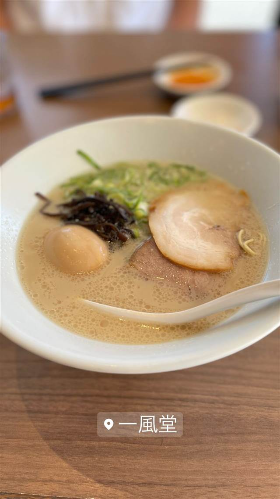

TOKYO豚骨BASE MADE by 一風堂 エキュート品川店
女性も入りやすい内装で人気の豚骨、白湯と清湯醤油を選べる
一風堂
一風堂は1985年、河原成美氏が福岡・大名で創業した豚骨ラーメン店で、当時のラーメン店のイメージを覆すスタイリッシュな内装で女性客を取り込んだ。品川駅の「TOKYO豚骨BASE MADE by 一風堂」はその一風堂がプロデュースする駅ナカ業態で、豚骨白湯と清湯醤油を選べるのが特徴。
TRIVIA
へえ、という話
- 一風堂は1980年代「怖い・臭い・汚い」と言われた博多ラーメンのイメージを覆すため、女性が一人でも入りやすいスタイリッシュな内装で始まった
- 店名は「業界に一陣の風を吹かせたい」という思いに由来するとされる
| 創業 | 一風堂本体は1985年10月16日に福岡市大名で創業。「TOKYO豚骨BASE MADE by 一風堂」は2011年4月にエキュート品川で開業 |
|---|---|
| 系譜 | 博多発の豚骨ラーメンチェーン「一風堂」がプロデュースする、駅ナカ向け業態 |
| 看板 | 豚骨白湯ラーメン、清湯醤油ラーメン、国産素材の肉焼売 |
| こだわり | 辛味高菜・紅生姜・にんにく・特製辛味噌・特製柚子胡椒の5種の無料トッピングで自分好みにカスタマイズできる |
| 掲載・受賞 | 一風堂は世界各国に展開する福岡発ラーメンチェーンとして知られる |
| 予算 | 昼 ～¥999 夜 ～¥999 |
| 定休日 | 無休 |
| 場所 | 品川駅 東京都港区高輪3-26-27 エキュート品川 |
| 注意 | 品川駅構内エキュート内、テイクアウトも可能 |
食べたもの：豚骨ラーメン
NEARBY
近い店・同じ系統の店
-
 ★
豚骨 東高円寺駅
豚骨 蒼翔
クラウドファンディングで開業、鶏を使わない家系風豚骨
昼 ¥1,000～¥1,999 夜 ¥1,000～¥1,999
★
豚骨 東高円寺駅
豚骨 蒼翔
クラウドファンディングで開業、鶏を使わない家系風豚骨
昼 ¥1,000～¥1,999 夜 ¥1,000～¥1,999
-
 ★
豚骨 三ツ境駅
ラーメンショップ 二ツ橋店
二郎顔負けの分厚いチャーシューをのせるネギラーメン
昼 ～¥999 夜 ¥1,000～¥1,999
★
豚骨 三ツ境駅
ラーメンショップ 二ツ橋店
二郎顔負けの分厚いチャーシューをのせるネギラーメン
昼 ～¥999 夜 ¥1,000～¥1,999
-
 ピザ 品川駅
Italian BAR KIMURAYA 品川
和とイタリアンを掛け合わせた、新鮮魚介と飲み放題スパークリングの一軒
昼 ¥1,000未満 夜 ¥3,000～¥3,999
ピザ 品川駅
Italian BAR KIMURAYA 品川
和とイタリアンを掛け合わせた、新鮮魚介と飲み放題スパークリングの一軒
昼 ¥1,000未満 夜 ¥3,000～¥3,999
-
 カフェ 品川駅／高輪ゲートウェイ駅
GOOD MORNING CAFE 品川シーズンテラス
朝ランや朝散歩のあとに寄れる、朝から夜まで通し営業のカフェ
昼 ¥1,000～¥1,999 夜 ¥3,000～¥3,999
カフェ 品川駅／高輪ゲートウェイ駅
GOOD MORNING CAFE 品川シーズンテラス
朝ランや朝散歩のあとに寄れる、朝から夜まで通し営業のカフェ
昼 ¥1,000～¥1,999 夜 ¥3,000～¥3,999
-
 ケーキ・パフェ 品川駅
品川プリンスホテル
旧毛利家の邸宅跡地に1978年に開業した老舗ホテル
ケーキ・パフェ 品川駅
品川プリンスホテル
旧毛利家の邸宅跡地に1978年に開業した老舗ホテル
-
 豚骨 大和駅
うまいヨ ゆうちゃんラーメン
TRYとんこつ3年連続王者の「どっ豚骨」ラーメン
夜 ¥2,000～¥2,999
豚骨 大和駅
うまいヨ ゆうちゃんラーメン
TRYとんこつ3年連続王者の「どっ豚骨」ラーメン
夜 ¥2,000～¥2,999